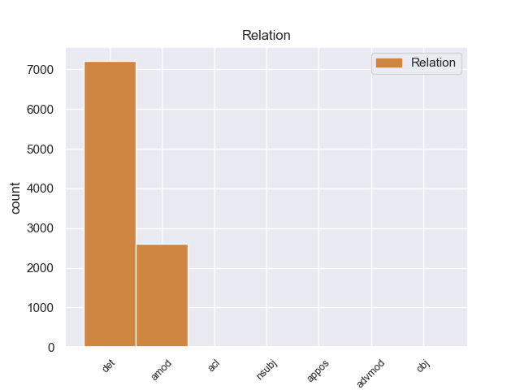
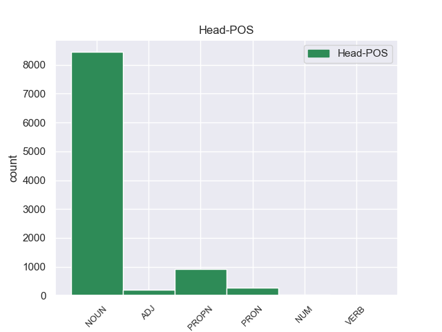
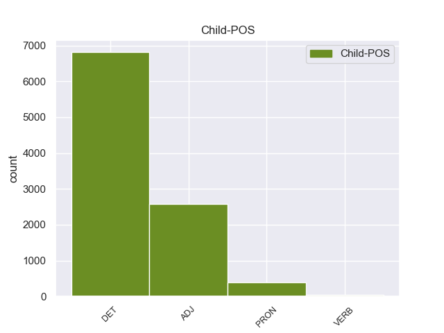

Distribution of features within this leaf



Agreement Rules sorted by frequency.
- When the dependent token is the determiner(det) of the head token, and the head token is NOUN and the dependent token is DET.
1 Αυτό _ _ _ _ 0 _ _ _
2 μπορεί _ _ _ _ 0 _ _ _
3 να _ _ _ _ 0 _ _ _
4 μην _ _ _ _ 0 _ _ _
5 οδηγήσει _ _ _ _ 0 _ _ _
6 σ _ _ _ _ 0 _ _ _
7 τη _ _ _ _ 0 _ _ _
8 λήξη _ _ _ _ 0 _ _ _
9 του _ _ _ _ 0 _ _ _
10 εν _ _ _ _ 0 _ _ _
11 λόγω _ _ _ _ 0 _ _ _
12 ζητήματος _ _ _ _ 0 _ _ _
13 αλλά _ _ _ _ 0 _ _ _
14 , _ _ _ _ 0 _ _ _
15 σ _ _ _ _ 0 _ _ _
16 τη _ _ _ _ 0 _ _ _
17 μορφή _ _ _ _ 0 _ _ _
18 υπό _ _ _ _ 0 _ _ _
19 την _ _ _ _ 0 _ _ _
20 οποία _ _ _ _ 0 _ _ _
21 την _ _ _ _ 0 _ _ _
22 λάβαμε _ _ _ _ 0 _ _ _
23 , _ _ _ _ 0 _ _ _
24 αυτή _ _ _ _ 0 _ _ _
25 η _ _ _ _ 0 _ _ _
26 αίτηση _ _ _ _ 0 _ _ _
27 άρσης _ _ _ _ 0 _ _ _
28 της _ _ _ _ 0 _ _ _
29 ασυλίας _ _ _ _ 0 _ _ _
30 ήταν _ _ _ _ 0 _ _ _
31 , _ _ _ _ 0 _ _ _
32 κατά _ _ _ _ 0 _ _ _
33 την _ _ _ _ 0 _ _ _
34 άποψη _ _ _ _ 0 _ _ _
35 της _ _ _ _ 0 _ _ _
36 Επιτροπής _ _ _ _ 0 _ _ _
37 Νομικών _ _ _ _ 0 _ _ _
38 Θεμάτων _ _ _ _ 0 _ _ _
39 , _ _ _ _ 0 _ _ _
40 απαράδεκτη _ _ _ _ 0 _ _ _
41 , _ _ _ _ 0 _ _ _
42 άποψη _ _ _ _ 0 _ _ _
43 την _ _ _ _ 0 _ _ _
44 οποία _ _ _ _ 0 _ _ _
45 συνιστώ _ _ _ _ 0 _ _ _
46 σ _ _ _ _ 0 _ _ _
47 το ο DET AtDf Case=Acc|Gender=Neut|Number=Sing 48 det _ _
48 Σώμα σώμα NOUN NOUN Case=Acc|Gender=Neut|Number=Sing 0 _ _ _
49 να _ _ _ _ 0 _ _ _
50 υιοθετήσει _ _ _ _ 0 _ _ _
51 . _ _ _ _ 0 _ _ _
1 Αυτό _ _ _ _ 0 _ _ _
2 μπορεί _ _ _ _ 0 _ _ _
3 να _ _ _ _ 0 _ _ _
4 μην _ _ _ _ 0 _ _ _
5 οδηγήσει _ _ _ _ 0 _ _ _
6 σ _ _ _ _ 0 _ _ _
7 τη _ _ _ _ 0 _ _ _
8 λήξη _ _ _ _ 0 _ _ _
9 του _ _ _ _ 0 _ _ _
10 εν _ _ _ _ 0 _ _ _
11 λόγω _ _ _ _ 0 _ _ _
12 ζητήματος _ _ _ _ 0 _ _ _
13 αλλά _ _ _ _ 0 _ _ _
14 , _ _ _ _ 0 _ _ _
15 σ _ _ _ _ 0 _ _ _
16 τη _ _ _ _ 0 _ _ _
17 μορφή _ _ _ _ 0 _ _ _
18 υπό _ _ _ _ 0 _ _ _
19 την _ _ _ _ 0 _ _ _
20 οποία _ _ _ _ 0 _ _ _
21 την _ _ _ _ 0 _ _ _
22 λάβαμε _ _ _ _ 0 _ _ _
23 , _ _ _ _ 0 _ _ _
24 αυτή _ _ _ _ 0 _ _ _
25 η _ _ _ _ 0 _ _ _
26 αίτηση _ _ _ _ 0 _ _ _
27 άρσης _ _ _ _ 0 _ _ _
28 της _ _ _ _ 0 _ _ _
29 ασυλίας _ _ _ _ 0 _ _ _
30 ήταν _ _ _ _ 0 _ _ _
31 , _ _ _ _ 0 _ _ _
32 κατά _ _ _ _ 0 _ _ _
33 την _ _ _ _ 0 _ _ _
34 άποψη _ _ _ _ 0 _ _ _
35 της _ _ _ _ 0 _ _ _
36 Επιτροπής _ _ _ _ 0 _ _ _
37 Νομικών νομικός ADJ ADJ Case=Gen|Gender=Neut|Number=Plur 38 amod _ _
38 Θεμάτων θέμα NOUN NOUN Case=Gen|Gender=Neut|Number=Plur 0 _ _ _
39 , _ _ _ _ 0 _ _ _
40 απαράδεκτη _ _ _ _ 0 _ _ _
41 , _ _ _ _ 0 _ _ _
42 άποψη _ _ _ _ 0 _ _ _
43 την _ _ _ _ 0 _ _ _
44 οποία _ _ _ _ 0 _ _ _
45 συνιστώ _ _ _ _ 0 _ _ _
46 σ _ _ _ _ 0 _ _ _
47 το _ _ _ _ 0 _ _ _
48 Σώμα _ _ _ _ 0 _ _ _
49 να _ _ _ _ 0 _ _ _
50 υιοθετήσει _ _ _ _ 0 _ _ _
51 . _ _ _ _ 0 _ _ _
1 Ο _ _ _ _ 0 _ _ _
2 Εισαγγελέας _ _ _ _ 0 _ _ _
3 σ _ _ _ _ 0 _ _ _
4 τη ο DET AtDf Case=Acc|Gender=Fem|Number=Sing 5 det _ _
5 Γαλλία Γαλλία PROPN PROPN Case=Acc|Gender=Fem|Number=Sing 0 _ _ _
6 έχει _ _ _ _ 0 _ _ _
7 το _ _ _ _ 0 _ _ _
8 δικαίωμα _ _ _ _ 0 _ _ _
9 να _ _ _ _ 0 _ _ _
10 εκπληρώνει _ _ _ _ 0 _ _ _
11 τα _ _ _ _ 0 _ _ _
12 καθήκοντά _ _ _ _ 0 _ _ _
13 του _ _ _ _ 0 _ _ _
14 βάσει _ _ _ _ 0 _ _ _
15 του _ _ _ _ 0 _ _ _
16 νόμου _ _ _ _ 0 _ _ _
17 και _ _ _ _ 0 _ _ _
18 το _ _ _ _ 0 _ _ _
19 Σώμα _ _ _ _ 0 _ _ _
20 δεν _ _ _ _ 0 _ _ _
21 λαμβάνει _ _ _ _ 0 _ _ _
22 θέση _ _ _ _ 0 _ _ _
23 σχετικά _ _ _ _ 0 _ _ _
24 με _ _ _ _ 0 _ _ _
25 αυτό _ _ _ _ 0 _ _ _
26 . _ _ _ _ 0 _ _ _
1 Αυτό _ _ _ _ 0 _ _ _
2 μπορεί _ _ _ _ 0 _ _ _
3 να _ _ _ _ 0 _ _ _
4 μην _ _ _ _ 0 _ _ _
5 οδηγήσει _ _ _ _ 0 _ _ _
6 σ _ _ _ _ 0 _ _ _
7 τη _ _ _ _ 0 _ _ _
8 λήξη _ _ _ _ 0 _ _ _
9 του _ _ _ _ 0 _ _ _
10 εν _ _ _ _ 0 _ _ _
11 λόγω _ _ _ _ 0 _ _ _
12 ζητήματος _ _ _ _ 0 _ _ _
13 αλλά _ _ _ _ 0 _ _ _
14 , _ _ _ _ 0 _ _ _
15 σ _ _ _ _ 0 _ _ _
16 τη _ _ _ _ 0 _ _ _
17 μορφή _ _ _ _ 0 _ _ _
18 υπό _ _ _ _ 0 _ _ _
19 την _ _ _ _ 0 _ _ _
20 οποία _ _ _ _ 0 _ _ _
21 την _ _ _ _ 0 _ _ _
22 λάβαμε _ _ _ _ 0 _ _ _
23 , _ _ _ _ 0 _ _ _
24 αυτή αυτός PRON PRON Case=Nom|Gender=Fem|Number=Sing|Person=3|PronType=Dem 26 det _ _
25 η _ _ _ _ 0 _ _ _
26 αίτηση αίτηση NOUN NOUN Case=Nom|Gender=Fem|Number=Sing 0 _ _ _
27 άρσης _ _ _ _ 0 _ _ _
28 της _ _ _ _ 0 _ _ _
29 ασυλίας _ _ _ _ 0 _ _ _
30 ήταν _ _ _ _ 0 _ _ _
31 , _ _ _ _ 0 _ _ _
32 κατά _ _ _ _ 0 _ _ _
33 την _ _ _ _ 0 _ _ _
34 άποψη _ _ _ _ 0 _ _ _
35 της _ _ _ _ 0 _ _ _
36 Επιτροπής _ _ _ _ 0 _ _ _
37 Νομικών _ _ _ _ 0 _ _ _
38 Θεμάτων _ _ _ _ 0 _ _ _
39 , _ _ _ _ 0 _ _ _
40 απαράδεκτη _ _ _ _ 0 _ _ _
41 , _ _ _ _ 0 _ _ _
42 άποψη _ _ _ _ 0 _ _ _
43 την _ _ _ _ 0 _ _ _
44 οποία _ _ _ _ 0 _ _ _
45 συνιστώ _ _ _ _ 0 _ _ _
46 σ _ _ _ _ 0 _ _ _
47 το _ _ _ _ 0 _ _ _
48 Σώμα _ _ _ _ 0 _ _ _
49 να _ _ _ _ 0 _ _ _
50 υιοθετήσει _ _ _ _ 0 _ _ _
51 . _ _ _ _ 0 _ _ _
1 Αυτό _ _ _ _ 0 _ _ _
2 μπορεί _ _ _ _ 0 _ _ _
3 να _ _ _ _ 0 _ _ _
4 μην _ _ _ _ 0 _ _ _
5 οδηγήσει _ _ _ _ 0 _ _ _
6 σ _ _ _ _ 0 _ _ _
7 τη _ _ _ _ 0 _ _ _
8 λήξη _ _ _ _ 0 _ _ _
9 του _ _ _ _ 0 _ _ _
10 εν _ _ _ _ 0 _ _ _
11 λόγω _ _ _ _ 0 _ _ _
12 ζητήματος _ _ _ _ 0 _ _ _
13 αλλά _ _ _ _ 0 _ _ _
14 , _ _ _ _ 0 _ _ _
15 σ _ _ _ _ 0 _ _ _
16 τη _ _ _ _ 0 _ _ _
17 μορφή _ _ _ _ 0 _ _ _
18 υπό _ _ _ _ 0 _ _ _
19 την _ _ _ _ 0 _ _ _
20 οποία _ _ _ _ 0 _ _ _
21 την _ _ _ _ 0 _ _ _
22 λάβαμε _ _ _ _ 0 _ _ _
23 , _ _ _ _ 0 _ _ _
24 αυτή _ _ _ _ 0 _ _ _
25 η _ _ _ _ 0 _ _ _
26 αίτηση _ _ _ _ 0 _ _ _
27 άρσης _ _ _ _ 0 _ _ _
28 της _ _ _ _ 0 _ _ _
29 ασυλίας _ _ _ _ 0 _ _ _
30 ήταν _ _ _ _ 0 _ _ _
31 , _ _ _ _ 0 _ _ _
32 κατά _ _ _ _ 0 _ _ _
33 την _ _ _ _ 0 _ _ _
34 άποψη _ _ _ _ 0 _ _ _
35 της _ _ _ _ 0 _ _ _
36 Επιτροπής _ _ _ _ 0 _ _ _
37 Νομικών _ _ _ _ 0 _ _ _
38 Θεμάτων _ _ _ _ 0 _ _ _
39 , _ _ _ _ 0 _ _ _
40 απαράδεκτη _ _ _ _ 0 _ _ _
41 , _ _ _ _ 0 _ _ _
42 άποψη _ _ _ _ 0 _ _ _
43 την ο DET DET Case=Acc|Definite=Def|Gender=Fem|Number=Sing|PronType=Art 44 det _ _
44 οποία οποίος PRON PRON Case=Acc|Gender=Fem|Number=Sing|Person=3|PronType=Rel 0 _ _ _
45 συνιστώ _ _ _ _ 0 _ _ _
46 σ _ _ _ _ 0 _ _ _
47 το _ _ _ _ 0 _ _ _
48 Σώμα _ _ _ _ 0 _ _ _
49 να _ _ _ _ 0 _ _ _
50 υιοθετήσει _ _ _ _ 0 _ _ _
51 . _ _ _ _ 0 _ _ _
1 πρόκειται _ _ _ _ 0 _ _ _
2 για _ _ _ _ 0 _ _ _
3 αυτό _ _ _ _ 0 _ _ _
4 το _ _ _ _ 0 _ _ _
5 οποίο _ _ _ _ 0 _ _ _
6 αποκαλύφθηκε _ _ _ _ 0 _ _ _
7 κατά _ _ _ _ 0 _ _ _
8 τη _ _ _ _ 0 _ _ _
9 διάρκεια _ _ _ _ 0 _ _ _
10 αυτής _ _ _ _ 0 _ _ _
11 της _ _ _ _ 0 _ _ _
12 διαδικασίας _ _ _ _ 0 _ _ _
13 , _ _ _ _ 0 _ _ _
14 ότι _ _ _ _ 0 _ _ _
15 ο _ _ _ _ 0 _ _ _
16 Εισαγγελέας _ _ _ _ 0 _ _ _
17 κάποια _ _ _ _ 0 _ _ _
18 στιγμή _ _ _ _ 0 _ _ _
19 ζήτησε _ _ _ _ 0 _ _ _
20 από _ _ _ _ 0 _ _ _
21 την _ _ _ _ 0 _ _ _
22 Πρόεδρο _ _ _ _ 0 _ _ _
23 του _ _ _ _ 0 _ _ _
24 Σώματος _ _ _ _ 0 _ _ _
25 , _ _ _ _ 0 _ _ _
26 την ο DET DET Case=Acc|Definite=Def|Gender=Fem|Number=Sing|PronType=Art 27 det _ _
27 προκάτοχό προκάτοχος ADJ ADJ Case=Acc|Gender=Fem|Number=Sing 0 _ _ _
28 σας _ _ _ _ 0 _ _ _
29 , _ _ _ _ 0 _ _ _
30 λεπτομέρειες _ _ _ _ 0 _ _ _
31 για _ _ _ _ 0 _ _ _
32 την _ _ _ _ 0 _ _ _
33 ψήφο _ _ _ _ 0 _ _ _
34 που _ _ _ _ 0 _ _ _
35 έχουν _ _ _ _ 0 _ _ _
36 δώσει _ _ _ _ 0 _ _ _
37 οι _ _ _ _ 0 _ _ _
38 δύο _ _ _ _ 0 _ _ _
39 συγκεκριμένοι _ _ _ _ 0 _ _ _
40 βουλευτές _ _ _ _ 0 _ _ _
41 προκειμένου _ _ _ _ 0 _ _ _
42 να _ _ _ _ 0 _ _ _
43 διευκρινιστεί _ _ _ _ 0 _ _ _
44 περαιτέρω _ _ _ _ 0 _ _ _
45 η _ _ _ _ 0 _ _ _
46 πιθανότητα _ _ _ _ 0 _ _ _
47 να _ _ _ _ 0 _ _ _
48 είχαν _ _ _ _ 0 _ _ _
49 ασκήσει _ _ _ _ 0 _ _ _
50 αθέμιτη _ _ _ _ 0 _ _ _
51 επιρροή _ _ _ _ 0 _ _ _
52 . _ _ _ _ 0 _ _ _
1 Χθες _ _ _ _ 0 _ _ _
2 , _ _ _ _ 0 _ _ _
3 η _ _ _ _ 0 _ _ _
4 Μπενφίκα _ _ _ _ 0 _ _ _
5 νίκησε _ _ _ _ 0 _ _ _
6 την _ _ _ _ 0 _ _ _
7 Ζενίτ _ _ _ _ 0 _ _ _
8 Αγίας άγιος ADJ ADJ Case=Gen|Gender=Fem|Number=Sing 9 amod _ _
9 Πετρούπολης Πετρούπολη PROPN PROPN Case=Gen|Gender=Fem|Number=Sing 0 _ _ _
10 με _ _ _ _ 0 _ _ _
11 σκορ _ _ _ _ 0 _ _ _
12 2:0 _ _ _ _ 0 _ _ _
13 , _ _ _ _ 0 _ _ _
14 κατά _ _ _ _ 0 _ _ _
15 τη _ _ _ _ 0 _ _ _
16 διάρκεια _ _ _ _ 0 _ _ _
17 του _ _ _ _ 0 _ _ _
18 επαναληπτικού _ _ _ _ 0 _ _ _
19 αγώνα _ _ _ _ 0 _ _ _
20 σ _ _ _ _ 0 _ _ _
21 τη _ _ _ _ 0 _ _ _
22 φάση _ _ _ _ 0 _ _ _
23 των _ _ _ _ 0 _ _ _
24 16 _ _ _ _ 0 _ _ _
25 του _ _ _ _ 0 _ _ _
26 Τσάμπιονς _ _ _ _ 0 _ _ _
27 Λιγκ _ _ _ _ 0 _ _ _
28 2011-2012 _ _ _ _ 0 _ _ _
29 . _ _ _ _ 0 _ _ _
1 Το _ _ _ _ 0 _ _ _
2 Κόμμα _ _ _ _ 0 _ _ _
3 των _ _ _ _ 0 _ _ _
4 Φιλελευθέρων _ _ _ _ 0 _ _ _
5 νικήθηκε _ _ _ _ 0 _ _ _
6 από _ _ _ _ 0 _ _ _
7 την _ _ _ _ 0 _ _ _
8 ενωμένη ενώνω VERB VERB Aspect=Perf|Case=Acc|Gender=Fem|Number=Sing|VerbForm=Part|Voice=Pass 9 amod _ _
9 αντιπολίτευση αντιπολίτευση NOUN NOUN Case=Acc|Gender=Fem|Number=Sing 0 _ _ _
10 , _ _ _ _ 0 _ _ _
11 ο _ _ _ _ 0 _ _ _
12 δε _ _ _ _ 0 _ _ _
13 Βενιζέλος _ _ _ _ 0 _ _ _
14 δεν _ _ _ _ 0 _ _ _
15 εξελέγη _ _ _ _ 0 _ _ _
16 καν _ _ _ _ 0 _ _ _
17 βουλευτής _ _ _ _ 0 _ _ _
18 . _ _ _ _ 0 _ _ _
1 Με _ _ _ _ 0 _ _ _
2 αυτές _ _ _ _ 0 _ _ _
3 τις _ _ _ _ 0 _ _ _
4 κατηγορίες _ _ _ _ 0 _ _ _
5 , _ _ _ _ 0 _ _ _
6 από _ _ _ _ 0 _ _ _
7 τις _ _ _ _ 0 _ _ _
8 οποίες _ _ _ _ 0 _ _ _
9 η _ _ _ _ 0 _ _ _
10 πρώτη _ _ _ _ 0 _ _ _
11 αφορά _ _ _ _ 0 _ _ _
12 λαθρεμπόριο _ _ _ _ 0 _ _ _
13 όπλων _ _ _ _ 0 _ _ _
14 κλπ. _ _ _ _ 0 _ _ _
15 , _ _ _ _ 0 _ _ _
16 και _ _ _ _ 0 _ _ _
17 βαρύνει _ _ _ _ 0 _ _ _
18 τόσο _ _ _ _ 0 _ _ _
19 τον _ _ _ _ 0 _ _ _
20 κ. _ _ _ _ 0 _ _ _
21 Pasqua _ _ _ _ 0 _ _ _
22 όσο _ _ _ _ 0 _ _ _
23 και _ _ _ _ 0 _ _ _
24 τον _ _ _ _ 0 _ _ _
25 κ. _ _ _ _ 0 _ _ _
26 Marchiani _ _ _ _ 0 _ _ _
27 , _ _ _ _ 0 _ _ _
28 ενώ _ _ _ _ 0 _ _ _
29 η ο DET DET Case=Nom|Definite=Def|Gender=Fem|Number=Sing|PronType=Art 30 det _ _
30 δεύτερη δεύτερος NUM NUM Case=Nom|Gender=Fem|Number=Sing|NumType=Ord 0 _ _ _
31 στρέφεται _ _ _ _ 0 _ _ _
32 μόνον _ _ _ _ 0 _ _ _
33 εναντίον _ _ _ _ 0 _ _ _
34 του _ _ _ _ 0 _ _ _
35 κ. _ _ _ _ 0 _ _ _
36 Pasqua _ _ _ _ 0 _ _ _
37 , _ _ _ _ 0 _ _ _
38 οι _ _ _ _ 0 _ _ _
39 ανακριτές _ _ _ _ 0 _ _ _
40 δικαστές _ _ _ _ 0 _ _ _
41 ζητούν _ _ _ _ 0 _ _ _
42 την _ _ _ _ 0 _ _ _
43 άρση _ _ _ _ 0 _ _ _
44 της _ _ _ _ 0 _ _ _
45 βουλευτικής _ _ _ _ 0 _ _ _
46 ασυλίας _ _ _ _ 0 _ _ _
47 των _ _ _ _ 0 _ _ _
48 εν _ _ _ _ 0 _ _ _
49 λόγω _ _ _ _ 0 _ _ _
50 δύο _ _ _ _ 0 _ _ _
51 κυρίων _ _ _ _ 0 _ _ _
52 , _ _ _ _ 0 _ _ _
53 προκειμένου _ _ _ _ 0 _ _ _
54 να _ _ _ _ 0 _ _ _
55 τους _ _ _ _ 0 _ _ _
56 επιβληθούν _ _ _ _ 0 _ _ _
57 ορισμένα _ _ _ _ 0 _ _ _
58 μέτρα _ _ _ _ 0 _ _ _
59 δικαστικής _ _ _ _ 0 _ _ _
60 επιτήρησης _ _ _ _ 0 _ _ _
61 : _ _ _ _ 0 _ _ _
62 να _ _ _ _ 0 _ _ _
63 τους _ _ _ _ 0 _ _ _
64 απαγορευθεί _ _ _ _ 0 _ _ _
65 η _ _ _ _ 0 _ _ _
66 επαφή _ _ _ _ 0 _ _ _
67 με _ _ _ _ 0 _ _ _
68 διάφορους _ _ _ _ 0 _ _ _
69 μάρτυρες _ _ _ _ 0 _ _ _
70 ή _ _ _ _ 0 _ _ _
71 συγκατηγορουμένους _ _ _ _ 0 _ _ _
72 σ _ _ _ _ 0 _ _ _
73 τις _ _ _ _ 0 _ _ _
74 υποθέσεις _ _ _ _ 0 _ _ _
75 αυτές _ _ _ _ 0 _ _ _
76 και _ _ _ _ 0 _ _ _
77 η _ _ _ _ 0 _ _ _
78 μετάβαση _ _ _ _ 0 _ _ _
79 σε _ _ _ _ 0 _ _ _
80 διάφορες _ _ _ _ 0 _ _ _
81 χώρες _ _ _ _ 0 _ _ _
82 , _ _ _ _ 0 _ _ _
83 καθώς _ _ _ _ 0 _ _ _
84 και _ _ _ _ 0 _ _ _
85 να _ _ _ _ 0 _ _ _
86 τους _ _ _ _ 0 _ _ _
87 επιβληθεί _ _ _ _ 0 _ _ _
88 ενδεχομένως _ _ _ _ 0 _ _ _
89 η _ _ _ _ 0 _ _ _
90 καταβολή _ _ _ _ 0 _ _ _
91 εγγύησης _ _ _ _ 0 _ _ _
92 . _ _ _ _ 0 _ _ _
1 Η _ _ _ _ 0 _ _ _
2 επανάσταση _ _ _ _ 0 _ _ _
3 οδήγησε _ _ _ _ 0 _ _ _
4 σ _ _ _ _ 0 _ _ _
5 τον _ _ _ _ 0 _ _ _
6 άτυχο _ _ _ _ 0 _ _ _
7 Ελληνοτουρκικό _ _ _ _ 0 _ _ _
8 πόλεμο _ _ _ _ 0 _ _ _
9 του _ _ _ _ 0 _ _ _
10 1897 _ _ _ _ 0 _ _ _
11 κατά _ _ _ _ 0 _ _ _
12 τον _ _ _ _ 0 _ _ _
13 οποίο _ _ _ _ 0 _ _ _
14 τα _ _ _ _ 0 _ _ _
15 τουρκικά _ _ _ _ 0 _ _ _
16 στρατεύματα _ _ _ _ 0 _ _ _
17 νίκησαν _ _ _ _ 0 _ _ _
18 κατά _ _ _ _ 0 _ _ _
19 κράτος _ _ _ _ 0 _ _ _
20 τα _ _ _ _ 0 _ _ _
21 αντίστοιχα αντίστοιχος ADJ ADJ Case=Acc|Gender=Neut|Number=Plur 22 amod _ _
22 ελληνικά ελληνικός ADJ ADJ Case=Acc|Gender=Neut|Number=Plur 0 _ _ _
23 σ _ _ _ _ 0 _ _ _
24 το _ _ _ _ 0 _ _ _
25 Θεσσαλικό _ _ _ _ 0 _ _ _
26 μέτωπο _ _ _ _ 0 _ _ _
27 . _ _ _ _ 0 _ _ _
1 Ακούγοντας _ _ _ _ 0 _ _ _
2 τα _ _ _ _ 0 _ _ _
3 λόγια _ _ _ _ 0 _ _ _
4 σας _ _ _ _ 0 _ _ _
5 ένιωθε _ _ _ _ 0 _ _ _
6 κανείς _ _ _ _ 0 _ _ _
7 ότι _ _ _ _ 0 _ _ _
8 δεν _ _ _ _ 0 _ _ _
9 θεωρείτε _ _ _ _ 0 _ _ _
10 την _ _ _ _ 0 _ _ _
11 αποστολή _ _ _ _ 0 _ _ _
12 σας _ _ _ _ 0 _ _ _
13 ως _ _ _ _ 0 _ _ _
14 Προέδρου _ _ _ _ 0 _ _ _
15 απλή _ _ _ _ 0 _ _ _
16 εκπροσώπηση _ _ _ _ 0 _ _ _
17 του _ _ _ _ 0 _ _ _
18 Κοινοβουλίου _ _ _ _ 0 _ _ _
19 προς _ _ _ _ 0 _ _ _
20 τα _ _ _ _ 0 _ _ _
21 έξω _ _ _ _ 0 _ _ _
22 , _ _ _ _ 0 _ _ _
23 παρά _ _ _ _ 0 _ _ _
24 αντίθετα _ _ _ _ 0 _ _ _
25 ενδιαφέρεστε _ _ _ _ 0 _ _ _
26 θερμά _ _ _ _ 0 _ _ _
27 για _ _ _ _ 0 _ _ _
28 την _ _ _ _ 0 _ _ _
29 πολιτική _ _ _ _ 0 _ _ _
30 , _ _ _ _ 0 _ _ _
31 για _ _ _ _ 0 _ _ _
32 όλα όλος ADJ ADJ Case=Acc|Gender=Neut|Number=Plur 33 amod _ _
33 όσα όσος PRON PRON Case=Acc|Gender=Neut|Number=Plur|Person=3|PronType=Ind,Rel 0 _ _ _
34 μπορούμε _ _ _ _ 0 _ _ _
35 να _ _ _ _ 0 _ _ _
36 κάνουμε _ _ _ _ 0 _ _ _
37 εδώ _ _ _ _ 0 _ _ _
38 σ _ _ _ _ 0 _ _ _
39 το _ _ _ _ 0 _ _ _
40 Ευρωπαϊκό _ _ _ _ 0 _ _ _
41 Κοινοβούλιο _ _ _ _ 0 _ _ _
42 . _ _ _ _ 0 _ _ _
1 Ευελπιστώ _ _ _ _ 0 _ _ _
2 ότι _ _ _ _ 0 _ _ _
3 η _ _ _ _ 0 _ _ _
4 απόφαση _ _ _ _ 0 _ _ _
5 αυτή _ _ _ _ 0 _ _ _
6 , _ _ _ _ 0 _ _ _
7 συμπεριλαμβανομένης συμπεριλαμβανόμενος VERB VERB Aspect=Perf|Case=Gen|Gender=Fem|Number=Sing|VerbForm=Part|Voice=Pass 11 acl _ _
8 και _ _ _ _ 0 _ _ _
9 της _ _ _ _ 0 _ _ _
10 αιτιολογικής _ _ _ _ 0 _ _ _
11 έκθεσης έκθεση NOUN NOUN Case=Gen|Gender=Fem|Number=Sing 0 _ _ _
12 που _ _ _ _ 0 _ _ _
13 την _ _ _ _ 0 _ _ _
14 συνοδεύει _ _ _ _ 0 _ _ _
15 , _ _ _ _ 0 _ _ _
16 θα _ _ _ _ 0 _ _ _
17 διαβιβαστεί _ _ _ _ 0 _ _ _
18 σ _ _ _ _ 0 _ _ _
19 τις _ _ _ _ 0 _ _ _
20 γαλλικές _ _ _ _ 0 _ _ _
21 αρχές _ _ _ _ 0 _ _ _
22 , _ _ _ _ 0 _ _ _
23 εφόσον _ _ _ _ 0 _ _ _
24 υπερψηφιστεί _ _ _ _ 0 _ _ _
25 από _ _ _ _ 0 _ _ _
26 το _ _ _ _ 0 _ _ _
27 Κοινοβούλιο _ _ _ _ 0 _ _ _
28 . _ _ _ _ 0 _ _ _
1 Ωστόσο _ _ _ _ 0 _ _ _
2 , _ _ _ _ 0 _ _ _
3 κάτι κάτι PRON PRON Case=Nom|Gender=Neut|Number=Sing|Person=3|PronType=Ind 0 _ _ _
4 τέτοιο τέτοιος PRON PRON Case=Nom|Gender=Neut|Number=Sing|Person=3|PronType=Dem 3 det _ _
5 απαιτεί _ _ _ _ 0 _ _ _
6 ξεκάθαρες _ _ _ _ 0 _ _ _
7 ενδείξεις _ _ _ _ 0 _ _ _
8 από _ _ _ _ 0 _ _ _
9 πλευράς _ _ _ _ 0 _ _ _
10 Βόρειας _ _ _ _ 0 _ _ _
11 Κορέας _ _ _ _ 0 _ _ _
12 , _ _ _ _ 0 _ _ _
13 που _ _ _ _ 0 _ _ _
14 μέχρι _ _ _ _ 0 _ _ _
15 τώρα _ _ _ _ 0 _ _ _
16 δεν _ _ _ _ 0 _ _ _
17 έχουν _ _ _ _ 0 _ _ _
18 εμφανιστεί _ _ _ _ 0 _ _ _
19 . _ _ _ _ 0 _ _ _
1 Η _ _ _ _ 0 _ _ _
2 διαμάχη _ _ _ _ 0 _ _ _
3 μεταξύ _ _ _ _ 0 _ _ _
4 Ρωσίας _ _ _ _ 0 _ _ _
5 και _ _ _ _ 0 _ _ _
6 Ουκρανίας _ _ _ _ 0 _ _ _
7 για _ _ _ _ 0 _ _ _
8 το _ _ _ _ 0 _ _ _
9 μέλλον _ _ _ _ 0 _ _ _
10 της _ _ _ _ 0 _ _ _
11 Κριμαίας _ _ _ _ 0 _ _ _
12 κορυφώνεται _ _ _ _ 0 _ _ _
13 και _ _ _ _ 0 _ _ _
14 οι _ _ _ _ 0 _ _ _
15 Τάταροι _ _ _ _ 0 _ _ _
16 , _ _ _ _ 0 _ _ _
17 άλλη άλλος PRON PRON Case=Nom|Gender=Fem|Number=Sing|Person=3|PronType=Ind 18 det _ _
18 μια ένας NUM NUM Case=Nom|Gender=Fem|Number=Sing|NumType=Card 0 _ _ _
19 απ’ _ _ _ _ 0 _ _ _
20 τις _ _ _ _ 0 _ _ _
21 μειονότητες _ _ _ _ 0 _ _ _
22 που _ _ _ _ 0 _ _ _
23 ζουν _ _ _ _ 0 _ _ _
24 σ _ _ _ _ 0 _ _ _
25 την _ _ _ _ 0 _ _ _
26 επίμαχη _ _ _ _ 0 _ _ _
27 περιοχή _ _ _ _ 0 _ _ _
28 , _ _ _ _ 0 _ _ _
29 βρίσκονται _ _ _ _ 0 _ _ _
30 σε _ _ _ _ 0 _ _ _
31 μειονεκτική _ _ _ _ 0 _ _ _
32 θέση _ _ _ _ 0 _ _ _
33 . _ _ _ _ 0 _ _ _
1 Εδώ _ _ _ _ 0 _ _ _
2 και _ _ _ _ 0 _ _ _
3 ενάμισι _ _ _ _ 0 _ _ _
4 χρόνο _ _ _ _ 0 _ _ _
5 κοιτάζουμε _ _ _ _ 0 _ _ _
6 άπραγοι _ _ _ _ 0 _ _ _
7 τον _ _ _ _ 0 _ _ _
8 εντελώς _ _ _ _ 0 _ _ _
9 άνισο _ _ _ _ 0 _ _ _
10 πόλεμο _ _ _ _ 0 _ _ _
11 που _ _ _ _ 0 _ _ _
12 διεξάγουν _ _ _ _ 0 _ _ _
13 αυτοί αυτός PRON PRON Case=Nom|Gender=Masc|Number=Plur|Person=3|PronType=Dem 16 det _ _
14 οι _ _ _ _ 0 _ _ _
15 δύο _ _ _ _ 0 _ _ _
16 αντίπαλοι αντίπαλος ADJ ADJ Case=Nom|Gender=Masc|Number=Plur 0 _ _ _
17 μεταξύ _ _ _ _ 0 _ _ _
18 τους _ _ _ _ 0 _ _ _
19 , _ _ _ _ 0 _ _ _
20 κοιτάζουμε _ _ _ _ 0 _ _ _
21 τα _ _ _ _ 0 _ _ _
22 τανκς _ _ _ _ 0 _ _ _
23 των _ _ _ _ 0 _ _ _
24 Ισραηλινών _ _ _ _ 0 _ _ _
25 να _ _ _ _ 0 _ _ _
26 καταστρέφουν _ _ _ _ 0 _ _ _
27 σπίτια _ _ _ _ 0 _ _ _
28 και _ _ _ _ 0 _ _ _
29 να _ _ _ _ 0 _ _ _
30 σκοτώνουν _ _ _ _ 0 _ _ _
31 παλαιστίνιους _ _ _ _ 0 _ _ _
32 πολίτες _ _ _ _ 0 _ _ _
33 . _ _ _ _ 0 _ _ _
1 Σε _ _ _ _ 0 _ _ _
2 τελική _ _ _ _ 0 _ _ _
3 ανάλυση _ _ _ _ 0 _ _ _
4 , _ _ _ _ 0 _ _ _
5 δεν _ _ _ _ 0 _ _ _
6 πρέπει _ _ _ _ 0 _ _ _
7 να _ _ _ _ 0 _ _ _
8 κρίνουμε _ _ _ _ 0 _ _ _
9 την _ _ _ _ 0 _ _ _
10 κατάσταση _ _ _ _ 0 _ _ _
11 των _ _ _ _ 0 _ _ _
12 ανθρωπίνων _ _ _ _ 0 _ _ _
13 δικαιωμάτων _ _ _ _ 0 _ _ _
14 σ _ _ _ _ 0 _ _ _
15 την _ _ _ _ 0 _ _ _
16 Τουρκία _ _ _ _ 0 _ _ _
17 με _ _ _ _ 0 _ _ _
18 κριτήριο _ _ _ _ 0 _ _ _
19 αυτά _ _ _ _ 0 _ _ _
20 που _ _ _ _ 0 _ _ _
21 γράφονται _ _ _ _ 0 _ _ _
22 σ _ _ _ _ 0 _ _ _
23 το _ _ _ _ 0 _ _ _
24 χαρτί _ _ _ _ 0 _ _ _
25 αλλά _ _ _ _ 0 _ _ _
26 με _ _ _ _ 0 _ _ _
27 κριτήριο κριτήριο NOUN NOUN Case=Acc|Gender=Neut|Number=Sing 0 _ _ _
28 αυτά αυτός PRON PRON Case=Nom|Gender=Neut|Number=Plur|Person=3|PronType=Dem 27 acl _ _
29 που _ _ _ _ 0 _ _ _
30 συμβαίνουν _ _ _ _ 0 _ _ _
31 καθημερινά _ _ _ _ 0 _ _ _
32 σ _ _ _ _ 0 _ _ _
33 την _ _ _ _ 0 _ _ _
34 πράξη _ _ _ _ 0 _ _ _
35 . _ _ _ _ 0 _ _ _
1 πρόκειται _ _ _ _ 0 _ _ _
2 για _ _ _ _ 0 _ _ _
3 αυτό _ _ _ _ 0 _ _ _
4 το _ _ _ _ 0 _ _ _
5 οποίο _ _ _ _ 0 _ _ _
6 αποκαλύφθηκε _ _ _ _ 0 _ _ _
7 κατά _ _ _ _ 0 _ _ _
8 τη _ _ _ _ 0 _ _ _
9 διάρκεια _ _ _ _ 0 _ _ _
10 αυτής _ _ _ _ 0 _ _ _
11 της _ _ _ _ 0 _ _ _
12 διαδικασίας _ _ _ _ 0 _ _ _
13 , _ _ _ _ 0 _ _ _
14 ότι _ _ _ _ 0 _ _ _
15 ο _ _ _ _ 0 _ _ _
16 Εισαγγελέας _ _ _ _ 0 _ _ _
17 κάποια _ _ _ _ 0 _ _ _
18 στιγμή _ _ _ _ 0 _ _ _
19 ζήτησε _ _ _ _ 0 _ _ _
20 από _ _ _ _ 0 _ _ _
21 την _ _ _ _ 0 _ _ _
22 Πρόεδρο πρόεδρος NOUN NOUN Case=Acc|Gender=Fem|Number=Sing 0 _ _ _
23 του _ _ _ _ 0 _ _ _
24 Σώματος _ _ _ _ 0 _ _ _
25 , _ _ _ _ 0 _ _ _
26 την _ _ _ _ 0 _ _ _
27 προκάτοχό προκάτοχος ADJ ADJ Case=Acc|Gender=Fem|Number=Sing 22 appos _ _
28 σας _ _ _ _ 0 _ _ _
29 , _ _ _ _ 0 _ _ _
30 λεπτομέρειες _ _ _ _ 0 _ _ _
31 για _ _ _ _ 0 _ _ _
32 την _ _ _ _ 0 _ _ _
33 ψήφο _ _ _ _ 0 _ _ _
34 που _ _ _ _ 0 _ _ _
35 έχουν _ _ _ _ 0 _ _ _
36 δώσει _ _ _ _ 0 _ _ _
37 οι _ _ _ _ 0 _ _ _
38 δύο _ _ _ _ 0 _ _ _
39 συγκεκριμένοι _ _ _ _ 0 _ _ _
40 βουλευτές _ _ _ _ 0 _ _ _
41 προκειμένου _ _ _ _ 0 _ _ _
42 να _ _ _ _ 0 _ _ _
43 διευκρινιστεί _ _ _ _ 0 _ _ _
44 περαιτέρω _ _ _ _ 0 _ _ _
45 η _ _ _ _ 0 _ _ _
46 πιθανότητα _ _ _ _ 0 _ _ _
47 να _ _ _ _ 0 _ _ _
48 είχαν _ _ _ _ 0 _ _ _
49 ασκήσει _ _ _ _ 0 _ _ _
50 αθέμιτη _ _ _ _ 0 _ _ _
51 επιρροή _ _ _ _ 0 _ _ _
52 . _ _ _ _ 0 _ _ _
1 Σ _ _ _ _ 0 _ _ _
2 το _ _ _ _ 0 _ _ _
3 εσωτερικό _ _ _ _ 0 _ _ _
4 του _ _ _ _ 0 _ _ _
5 φρουρίου _ _ _ _ 0 _ _ _
6 , _ _ _ _ 0 _ _ _
7 τα _ _ _ _ 0 _ _ _
8 σπίτια _ _ _ _ 0 _ _ _
9 ήταν _ _ _ _ 0 _ _ _
10 μικρά _ _ _ _ 0 _ _ _
11 και _ _ _ _ 0 _ _ _
12 χτισμένα χτίζω ADJ ADJ Case=Nom|Gender=Neut|Number=Plur 0 _ _ _
13 το _ _ _ _ 0 _ _ _
14 ένα ένας PRON PRON Case=Nom|Gender=Neut|Number=Sing|Person=3|PronType=Ind 12 nsubj _ _
15 πολύ _ _ _ _ 0 _ _ _
16 κοντά _ _ _ _ 0 _ _ _
17 σ _ _ _ _ 0 _ _ _
18 το _ _ _ _ 0 _ _ _
19 άλλο _ _ _ _ 0 _ _ _
20 , _ _ _ _ 0 _ _ _
21 λόγω _ _ _ _ 0 _ _ _
22 έλλειψης _ _ _ _ 0 _ _ _
23 χώρου _ _ _ _ 0 _ _ _
24 . _ _ _ _ 0 _ _ _
1 Ο _ _ _ _ 0 _ _ _
2 Υπουργός _ _ _ _ 0 _ _ _
3 Εσωτερικών _ _ _ _ 0 _ _ _
4 της _ _ _ _ 0 _ _ _
5 Γαλλίας _ _ _ _ 0 _ _ _
6 , _ _ _ _ 0 _ _ _
7 Κλώντ _ _ _ _ 0 _ _ _
8 Γκιάντ _ _ _ _ 0 _ _ _
9 , _ _ _ _ 0 _ _ _
10 δήλωσε _ _ _ _ 0 _ _ _
11 ότι _ _ _ _ 0 _ _ _
12 « _ _ _ _ 0 _ _ _
13 οι _ _ _ _ 0 _ _ _
14 Αρχές _ _ _ _ 0 _ _ _
15 είναι _ _ _ _ 0 _ _ _
16 αποφασισμένες _ _ _ _ 0 _ _ _
17 να _ _ _ _ 0 _ _ _
18 συλλάβουν _ _ _ _ 0 _ _ _
19 τον _ _ _ _ 0 _ _ _
20 δράστη δράστης NOUN NOUN Case=Acc|Gender=Masc|Number=Sing 0 _ _ _
21 ζωντανό ζωντανός ADJ ADJ Case=Acc|Gender=Masc|Number=Sing 20 acl _ SpaceAfter=No
22 » _ _ _ _ 0 _ _ _
23 . _ _ _ _ 0 _ _ _
1 Από _ _ _ _ 0 _ _ _
2 την _ _ _ _ 0 _ _ _
3 Γενεύη _ _ _ _ 0 _ _ _
4 ο ο DET DET Case=Nom|Definite=Def|Gender=Masc|Number=Sing|PronType=Art 5 amod _ _
5 Εκπρόσωπος εκπρόσωπος NOUN NOUN Case=Nom|Gender=Masc|Number=Sing 0 _ _ _
6 του _ _ _ _ 0 _ _ _
7 Ερυθρού _ _ _ _ 0 _ _ _
8 Σταυρού _ _ _ _ 0 _ _ _
9 δήλωσε _ _ _ _ 0 _ _ _
10 ότι _ _ _ _ 0 _ _ _
11 « _ _ _ _ 0 _ _ _
12 η _ _ _ _ 0 _ _ _
13 Βάλερι _ _ _ _ 0 _ _ _
14 Έιμος _ _ _ _ 0 _ _ _
15 συμμετείχε _ _ _ _ 0 _ _ _
16 σε _ _ _ _ 0 _ _ _
17 αποστολή _ _ _ _ 0 _ _ _
18 της _ _ _ _ 0 _ _ _
19 Συριακής _ _ _ _ 0 _ _ _
20 Ερυθράς _ _ _ _ 0 _ _ _
21 Ημισελήνου _ _ _ _ 0 _ _ _
22 , _ _ _ _ 0 _ _ _
23 η _ _ _ _ 0 _ _ _
24 οποία _ _ _ _ 0 _ _ _
25 επισκέφθηκε _ _ _ _ 0 _ _ _
26 την _ _ _ _ 0 _ _ _
27 Μπάμπα _ _ _ _ 0 _ _ _
28 Αμρ _ _ _ _ 0 _ _ _
29 για _ _ _ _ 0 _ _ _
30 45 _ _ _ _ 0 _ _ _
31 λεπτά _ _ _ _ 0 _ _ _
32 . _ _ _ _ 0 _ _ _
1 Η _ _ _ _ 0 _ _ _
2 ίδια _ _ _ _ 0 _ _ _
3 δήλωσε _ _ _ _ 0 _ _ _
4 πως _ _ _ _ 0 _ _ _
5 " _ _ _ _ 0 _ _ _
6 σ _ _ _ _ 0 _ _ _
7 τις _ _ _ _ 0 _ _ _
8 30 _ _ _ _ 0 _ _ _
9 Απριλίου _ _ _ _ 0 _ _ _
10 γιορτάζουμε _ _ _ _ 0 _ _ _
11 τα _ _ _ _ 0 _ _ _
12 200 _ _ _ _ 0 _ _ _
13 χρόνια _ _ _ _ 0 _ _ _
14 από _ _ _ _ 0 _ _ _
15 την _ _ _ _ 0 _ _ _
16 εγκαθίδρυση _ _ _ _ 0 _ _ _
17 του _ _ _ _ 0 _ _ _
18 Βασιλείου _ _ _ _ 0 _ _ _
19 των _ _ _ _ 0 _ _ _
20 Κάτω κάτω ADJ ADJ Case=Acc|Gender=Fem|Number=Plur 21 advmod _ _
21 Χωρών χώρα NOUN NOUN Case=Gen|Gender=Fem|Number=Plur 0 _ _ _
22 , _ _ _ _ 0 _ _ _
23 ενώ _ _ _ _ 0 _ _ _
24 επίσης _ _ _ _ 0 _ _ _
25 κλείνω _ _ _ _ 0 _ _ _
26 τα _ _ _ _ 0 _ _ _
27 75 _ _ _ _ 0 _ _ _
28 χρόνια _ _ _ _ 0 _ _ _
29 . _ _ _ _ 0 _ _ _
1 Συνεπώς _ _ _ _ 0 _ _ _
2 , _ _ _ _ 0 _ _ _
3 η _ _ _ _ 0 _ _ _
4 ΣΥΜΜΕΤΡΙΑ _ _ _ _ 0 _ _ _
5 πρέπει _ _ _ _ 0 _ _ _
6 να _ _ _ _ 0 _ _ _
7 εφαρμοσθεί _ _ _ _ 0 _ _ _
8 το _ _ _ _ 0 _ _ _
9 συντομότερο σύντομος ADJ ADJ Case=Nom|Degree=Cmp|Gender=Neut|Number=Sing 0 _ _ _
10 δυνατόν δυνατός ADJ ADJ Case=Nom|Gender=Neut|Number=Sing 9 advmod _ SpaceAfter=No
11 . _ _ _ _ 0 _ _ _
1 Ένα _ _ _ _ 0 _ _ _
2 από _ _ _ _ 0 _ _ _
3 τα _ _ _ _ 0 _ _ _
4 ζητήματα _ _ _ _ 0 _ _ _
5 που _ _ _ _ 0 _ _ _
6 θα _ _ _ _ 0 _ _ _
7 πρέπει _ _ _ _ 0 _ _ _
8 προφανώς _ _ _ _ 0 _ _ _
9 να _ _ _ _ 0 _ _ _
10 ελέγχει _ _ _ _ 0 _ _ _
11 η _ _ _ _ 0 _ _ _
12 Επιτροπή _ _ _ _ 0 _ _ _
13 είναι _ _ _ _ 0 _ _ _
14 εάν _ _ _ _ 0 _ _ _
15 οι _ _ _ _ 0 _ _ _
16 αλλοδαποί _ _ _ _ 0 _ _ _
17 μεταφορείς _ _ _ _ 0 _ _ _
18 ελέγχονται _ _ _ _ 0 _ _ _
19 αυστηρότερα _ _ _ _ 0 _ _ _
20 από _ _ _ _ 0 _ _ _
21 ό,τι _ _ _ _ 0 _ _ _
22 οι _ _ _ _ 0 _ _ _
23 ημεδαποί ημεδαπός ADJ ADJ Case=Nom|Gender=Masc|Number=Plur 0 _ _ _
24 , _ _ _ _ 0 _ _ _
25 δηλαδή _ _ _ _ 0 _ _ _
26 όσοι όσος PRON PRON Case=Nom|Gender=Masc|Number=Plur|Person=3|PronType=Ind,Rel 23 appos _ _
27 έχουν _ _ _ _ 0 _ _ _
28 την _ _ _ _ 0 _ _ _
29 ίδια _ _ _ _ 0 _ _ _
30 υπηκοότητα _ _ _ _ 0 _ _ _
31 με _ _ _ _ 0 _ _ _
32 τους _ _ _ _ 0 _ _ _
33 ελεγκτές _ _ _ _ 0 _ _ _
34 . _ _ _ _ 0 _ _ _
1 Σύμφωνα _ _ _ _ 0 _ _ _
2 με _ _ _ _ 0 _ _ _
3 την _ _ _ _ 0 _ _ _
4 Επιτροπή _ _ _ _ 0 _ _ _
5 , _ _ _ _ 0 _ _ _
6 κατέστη _ _ _ _ 0 _ _ _
7 δυνατόν _ _ _ _ 0 _ _ _
8 να _ _ _ _ 0 _ _ _
9 συμπεριληφθούν _ _ _ _ 0 _ _ _
10 μη _ _ _ _ 0 _ _ _
11 ευνοημένοι ευνοώ VERB VERB Aspect=Perf|Case=Nom|Gender=Masc|Number=Plur|VerbForm=Part|Voice=Pass 12 amod _ _
12 νέοι νέος ADJ ADJ Case=Nom|Gender=Masc|Number=Plur 0 _ _ _
13 σ _ _ _ _ 0 _ _ _
14 το _ _ _ _ 0 _ _ _
15 50% _ _ _ _ 0 _ _ _
16 των _ _ _ _ 0 _ _ _
17 κεντρικών _ _ _ _ 0 _ _ _
18 σχεδίων _ _ _ _ 0 _ _ _
19 , _ _ _ _ 0 _ _ _
20 ενώ _ _ _ _ 0 _ _ _
21 τούτο _ _ _ _ 0 _ _ _
22 ήταν _ _ _ _ 0 _ _ _
23 δυσκολότερο _ _ _ _ 0 _ _ _
24 σ _ _ _ _ 0 _ _ _
25 τα _ _ _ _ 0 _ _ _
26 αποκεντρωμένα _ _ _ _ 0 _ _ _
27 σχέδια _ _ _ _ 0 _ _ _
28 . _ _ _ _ 0 _ _ _
1 Χάρη _ _ _ _ 0 _ _ _
2 σ _ _ _ _ 0 _ _ _
3 το _ _ _ _ 0 _ _ _
4 Κοινοβούλιο _ _ _ _ 0 _ _ _
5 , _ _ _ _ 0 _ _ _
6 η _ _ _ _ 0 _ _ _
7 οδηγία _ _ _ _ 0 _ _ _
8 θα _ _ _ _ 0 _ _ _
9 μπορέσει _ _ _ _ 0 _ _ _
10 τελικά _ _ _ _ 0 _ _ _
11 να _ _ _ _ 0 _ _ _
12 καλύψει _ _ _ _ 0 _ _ _
13 όλους _ _ _ _ 0 _ _ _
14 τους _ _ _ _ 0 _ _ _
15 οδηγούς οδηγός NOUN NOUN Case=Acc|Gender=Masc|Number=Plur 0 _ _ _
16 όλων _ _ _ _ 0 _ _ _
17 των _ _ _ _ 0 _ _ _
18 κατηγοριών _ _ _ _ 0 _ _ _
19 , _ _ _ _ 0 _ _ _
20 αυτοαπασχολούμενους αυτοαπασχολούμενος VERB VERB Aspect=Perf|Case=Acc|Gender=Masc|Number=Plur|VerbForm=Part|Voice=Pass 15 appos _ _
21 και _ _ _ _ 0 _ _ _
22 μη _ _ _ _ 0 _ _ _
23 . _ _ _ _ 0 _ _ _
1 Ενθαρρυντικά ενθαρρυντικός ADJ ADJ Case=Nom|Gender=Neut|Number=Plur 0 _ _ _
2 τα _ _ _ _ 0 _ _ _
3 νέα νέος ADJ ADJ Case=Nom|Gender=Neut|Number=Plur 1 nsubj _ _
4 για _ _ _ _ 0 _ _ _
5 τη _ _ _ _ 0 _ _ _
6 γρίπη _ _ _ _ 0 _ _ _
7 των _ _ _ _ 0 _ _ _
8 πτηνών _ _ _ _ 0 _ _ _
1 Ενώ _ _ _ _ 0 _ _ _
2 τον _ _ _ _ 0 _ _ _
3 Ιανουάριο_του_1897 _ _ _ _ 0 _ _ _
4 γίνονταν _ _ _ _ 0 _ _ _
5 σφαγές _ _ _ _ 0 _ _ _
6 σ _ _ _ _ 0 _ _ _
7 τα _ _ _ _ 0 _ _ _
8 Χανιά _ _ _ _ 0 _ _ _
9 και _ _ _ _ 0 _ _ _
10 σ _ _ _ _ 0 _ _ _
11 το _ _ _ _ 0 _ _ _
12 Ρέθυμνο _ _ _ _ 0 _ _ _
13 , _ _ _ _ 0 _ _ _
14 ο _ _ _ _ 0 _ _ _
15 Βενιζέλος _ _ _ _ 0 _ _ _
16 που _ _ _ _ 0 _ _ _
17 περιόδευε _ _ _ _ 0 _ _ _
18 σ _ _ _ _ 0 _ _ _
19 το _ _ _ _ 0 _ _ _
20 νησί _ _ _ _ 0 _ _ _
21 , _ _ _ _ 0 _ _ _
22 έσπευσε _ _ _ _ 0 _ _ _
23 σ _ _ _ _ 0 _ _ _
24 τη _ _ _ _ 0 _ _ _
25 Μαλάξα _ _ _ _ 0 _ _ _
26 , _ _ _ _ 0 _ _ _
27 κοντά _ _ _ _ 0 _ _ _
28 σ _ _ _ _ 0 _ _ _
29 τα _ _ _ _ 0 _ _ _
30 Χανιά _ _ _ _ 0 _ _ _
31 όπου _ _ _ _ 0 _ _ _
32 είχαν _ _ _ _ 0 _ _ _
33 συγκεντρωθεί _ _ _ _ 0 _ _ _
34 περισσότεροι πολύς ADJ ADJ Case=Nom|Degree=Cmp|Gender=Masc|Number=Plur 37 nsubj _ _
35 από _ _ _ _ 0 _ _ _
36 2.000 _ _ _ _ 0 _ _ _
37 επαναστάτες επαναστάτης NOUN NOUN Case=Nom|Gender=Masc|Number=Plur 0 _ _ _
38 και _ _ _ _ 0 _ _ _
39 τέθηκε _ _ _ _ 0 _ _ _
40 επικεφαλής _ _ _ _ 0 _ _ _
41 τους _ _ _ _ 0 _ _ _
42 . _ _ _ _ 0 _ _ _
Disagree Examples:
1 Οι _ _ _ _ 0 _ _ _
2 διαδηλώσεις _ _ _ _ 0 _ _ _
3 διεξήχθησαν _ _ _ _ 0 _ _ _
4 σ _ _ _ _ 0 _ _ _
5 τη _ _ _ _ 0 _ _ _
6 Φαλούτζα _ _ _ _ 0 _ _ _
7 , _ _ _ _ 0 _ _ _
8 εξήντα _ _ _ _ 0 _ _ _
9 χιλιόμετρα _ _ _ _ 0 _ _ _
10 δυτικά _ _ _ _ 0 _ _ _
11 της _ _ _ _ 0 _ _ _
12 Βαγδάτης _ _ _ _ 0 _ _ _
13 , _ _ _ _ 0 _ _ _
14 όταν _ _ _ _ 0 _ _ _
15 οι _ _ _ _ 0 _ _ _
16 διαδηλωτές _ _ _ _ 0 _ _ _
17 , _ _ _ _ 0 _ _ _
18 οι _ _ _ _ 0 _ _ _
19 οποίοι _ _ _ _ 0 _ _ _
20 ανήκουν _ _ _ _ 0 _ _ _
21 σ _ _ _ _ 0 _ _ _
22 τη _ _ _ _ 0 _ _ _
23 μειονότητα _ _ _ _ 0 _ _ _
24 των _ _ _ _ 0 _ _ _
25 Σουνιτών _ _ _ _ 0 _ _ _
26 , _ _ _ _ 0 _ _ _
27 επιτέθηκαν _ _ _ _ 0 _ _ _
28 με _ _ _ _ 0 _ _ _
29 πέτρες _ _ _ _ 0 _ _ _
30 σ _ _ _ _ 0 _ _ _
31 τους _ _ _ _ 0 _ _ _
32 στρατιώτες _ _ _ _ 0 _ _ _
33 , _ _ _ _ 0 _ _ _
34 οι ο DET DET Case=Nom|Definite=Def|Gender=Fem|Number=Plur|PronType=Art 35 det _ _
35 οποίοι οποίος PRON PRON Case=Nom|Gender=Masc|Number=Plur|Person=3|PronType=Rel 0 _ _ _
36 με _ _ _ _ 0 _ _ _
37 τη _ _ _ _ 0 _ _ _
38 σειρά _ _ _ _ 0 _ _ _
39 τους _ _ _ _ 0 _ _ _
40 άνοιξαν _ _ _ _ 0 _ _ _
41 πυρ _ _ _ _ 0 _ _ _
42 , _ _ _ _ 0 _ _ _
43 με _ _ _ _ 0 _ _ _
44 αποτέλεσμα _ _ _ _ 0 _ _ _
45 πέντε _ _ _ _ 0 _ _ _
46 άτομα _ _ _ _ 0 _ _ _
47 να _ _ _ _ 0 _ _ _
48 χάσουν _ _ _ _ 0 _ _ _
49 τη _ _ _ _ 0 _ _ _
50 ζωή _ _ _ _ 0 _ _ _
51 τους _ _ _ _ 0 _ _ _
52 και _ _ _ _ 0 _ _ _
53 άλλα _ _ _ _ 0 _ _ _
54 είκοσι _ _ _ _ 0 _ _ _
55 να _ _ _ _ 0 _ _ _
56 τραυματιστούν _ _ _ _ 0 _ _ _
57 . _ _ _ _ 0 _ _ _
1 Συγχαίρω _ _ _ _ 0 _ _ _
2 τη _ _ _ _ 0 _ _ _
3 βελγική _ _ _ _ 0 _ _ _
4 Προεδρία _ _ _ _ 0 _ _ _
5 για _ _ _ _ 0 _ _ _
6 την _ _ _ _ 0 _ _ _
7 έγκριση _ _ _ _ 0 _ _ _
8 αυτού _ _ _ _ 0 _ _ _
9 του _ _ _ _ 0 _ _ _
10 εγγράφου _ _ _ _ 0 _ _ _
11 , _ _ _ _ 0 _ _ _
12 παρά _ _ _ _ 0 _ _ _
13 τα _ _ _ _ 0 _ _ _
14 προβλήματα _ _ _ _ 0 _ _ _
15 που _ _ _ _ 0 _ _ _
16 δημιούργησαν _ _ _ _ 0 _ _ _
17 ορισμένες _ _ _ _ 0 _ _ _
18 αντιπροσωπείες _ _ _ _ 0 _ _ _
19 , _ _ _ _ 0 _ _ _
20 και _ _ _ _ 0 _ _ _
21 θέλω _ _ _ _ 0 _ _ _
22 να _ _ _ _ 0 _ _ _
23 επαναλάβω _ _ _ _ 0 _ _ _
24 τα _ _ _ _ 0 _ _ _
25 συγχαρητήριά _ _ _ _ 0 _ _ _
26 μας _ _ _ _ 0 _ _ _
27 σ _ _ _ _ 0 _ _ _
28 το _ _ _ _ 0 _ _ _
29 Συμβούλιο _ _ _ _ 0 _ _ _
30 και _ _ _ _ 0 _ _ _
31 σ _ _ _ _ 0 _ _ _
32 την _ _ _ _ 0 _ _ _
33 Επιτροπή _ _ _ _ 0 _ _ _
34 και _ _ _ _ 0 _ _ _
35 τη _ _ _ _ 0 _ _ _
36 χαρά _ _ _ _ 0 _ _ _
37 μας _ _ _ _ 0 _ _ _
38 για _ _ _ _ 0 _ _ _
39 την _ _ _ _ 0 _ _ _
40 υιοθέτηση _ _ _ _ 0 _ _ _
41 αυτών αυτός PRON PRON Case=Gen|Gender=Fem|Number=Plur|Person=3|PronType=Dem 43 det _ _
42 των _ _ _ _ 0 _ _ _
43 κειμένων κείμενο NOUN NOUN Case=Gen|Gender=Neut|Number=Plur 0 _ _ _
44 . _ _ _ _ 0 _ _ _
1 Υπάρχει _ _ _ _ 0 _ _ _
2 μία _ _ _ _ 0 _ _ _
3 ομάδα _ _ _ _ 0 _ _ _
4 τροπολογιών _ _ _ _ 0 _ _ _
5 που _ _ _ _ 0 _ _ _
6 υπέβαλαν _ _ _ _ 0 _ _ _
7 οι _ _ _ _ 0 _ _ _
8 συνάδελφοι _ _ _ _ 0 _ _ _
9 της _ _ _ _ 0 _ _ _
10 Ομάδας _ _ _ _ 0 _ _ _
11 των ο DET DET Case=Gen|Definite=Def|Gender=Fem|Number=Plur|PronType=Art 12 det _ _
12 Πρασίνων πράσινος ADJ ADJ Case=Gen|Gender=Masc|Number=Plur 0 _ _ _
13 / _ _ _ _ 0 _ _ _
14 Ευρωπαϊκής _ _ _ _ 0 _ _ _
15 Ελεύθερης _ _ _ _ 0 _ _ _
16 Συμμαχίας _ _ _ _ 0 _ _ _
17 , _ _ _ _ 0 _ _ _
18 που _ _ _ _ 0 _ _ _
19 προσπαθούν _ _ _ _ 0 _ _ _
20 να _ _ _ _ 0 _ _ _
21 πουν _ _ _ _ 0 _ _ _
22 ότι _ _ _ _ 0 _ _ _
23 η _ _ _ _ 0 _ _ _
24 έγκριση _ _ _ _ 0 _ _ _
25 του _ _ _ _ 0 _ _ _
26 ευρωπαϊκού _ _ _ _ 0 _ _ _
27 εντάλματος _ _ _ _ 0 _ _ _
28 σύλληψης _ _ _ _ 0 _ _ _
29 εξαρτάται _ _ _ _ 0 _ _ _
30 από _ _ _ _ 0 _ _ _
31 τη _ _ _ _ 0 _ _ _
32 βελτίωση _ _ _ _ 0 _ _ _
33 συγκεκριμένων _ _ _ _ 0 _ _ _
34 δικαστικών _ _ _ _ 0 _ _ _
35 προτύπων _ _ _ _ 0 _ _ _
36 σ _ _ _ _ 0 _ _ _
37 την _ _ _ _ 0 _ _ _
38 Ευρωπαϊκή _ _ _ _ 0 _ _ _
39 Ένωση _ _ _ _ 0 _ _ _
40 . _ _ _ _ 0 _ _ _
1 Υπάρχει _ _ _ _ 0 _ _ _
2 μία _ _ _ _ 0 _ _ _
3 ομάδα _ _ _ _ 0 _ _ _
4 τροπολογιών _ _ _ _ 0 _ _ _
5 που _ _ _ _ 0 _ _ _
6 υπέβαλαν _ _ _ _ 0 _ _ _
7 οι _ _ _ _ 0 _ _ _
8 συνάδελφοι _ _ _ _ 0 _ _ _
9 της _ _ _ _ 0 _ _ _
10 Ομάδας ομάδα NOUN NOUN Case=Gen|Gender=Fem|Number=Sing 0 _ _ _
11 των _ _ _ _ 0 _ _ _
12 Πρασίνων πράσινος ADJ ADJ Case=Gen|Gender=Masc|Number=Plur 10 amod _ _
13 / _ _ _ _ 0 _ _ _
14 Ευρωπαϊκής _ _ _ _ 0 _ _ _
15 Ελεύθερης _ _ _ _ 0 _ _ _
16 Συμμαχίας _ _ _ _ 0 _ _ _
17 , _ _ _ _ 0 _ _ _
18 που _ _ _ _ 0 _ _ _
19 προσπαθούν _ _ _ _ 0 _ _ _
20 να _ _ _ _ 0 _ _ _
21 πουν _ _ _ _ 0 _ _ _
22 ότι _ _ _ _ 0 _ _ _
23 η _ _ _ _ 0 _ _ _
24 έγκριση _ _ _ _ 0 _ _ _
25 του _ _ _ _ 0 _ _ _
26 ευρωπαϊκού _ _ _ _ 0 _ _ _
27 εντάλματος _ _ _ _ 0 _ _ _
28 σύλληψης _ _ _ _ 0 _ _ _
29 εξαρτάται _ _ _ _ 0 _ _ _
30 από _ _ _ _ 0 _ _ _
31 τη _ _ _ _ 0 _ _ _
32 βελτίωση _ _ _ _ 0 _ _ _
33 συγκεκριμένων _ _ _ _ 0 _ _ _
34 δικαστικών _ _ _ _ 0 _ _ _
35 προτύπων _ _ _ _ 0 _ _ _
36 σ _ _ _ _ 0 _ _ _
37 την _ _ _ _ 0 _ _ _
38 Ευρωπαϊκή _ _ _ _ 0 _ _ _
39 Ένωση _ _ _ _ 0 _ _ _
40 . _ _ _ _ 0 _ _ _
1 Ο _ _ _ _ 0 _ _ _
2 Λευκός _ _ _ _ 0 _ _ _
3 Οίκος _ _ _ _ 0 _ _ _
4 και _ _ _ _ 0 _ _ _
5 ηγετικά _ _ _ _ 0 _ _ _
6 στελέχη στέλεχος NOUN NOUN Case=Nom|Gender=Neut|Number=Plur 0 _ _ _
7 των _ _ _ _ 0 _ _ _
8 Δημοκρατικών δημοκρατικός ADJ ADJ Case=Gen|Gender=Fem|Number=Plur 6 amod _ _
9 σ _ _ _ _ 0 _ _ _
10 τη _ _ _ _ 0 _ _ _
11 Γερουσία _ _ _ _ 0 _ _ _
12 δηλώνουν _ _ _ _ 0 _ _ _
13 ότι _ _ _ _ 0 _ _ _
14 " _ _ _ _ 0 _ _ _
15 κατέληξαν _ _ _ _ 0 _ _ _
16 σε _ _ _ _ 0 _ _ _
17 συμφωνία _ _ _ _ 0 _ _ _
18 με _ _ _ _ 0 _ _ _
19 τους _ _ _ _ 0 _ _ _
20 Ρεπουμπλικανούς _ _ _ _ 0 _ _ _
21 του _ _ _ _ 0 _ _ _
22 Κογκρέσου _ _ _ _ 0 _ _ _
23 , _ _ _ _ 0 _ _ _
24 μετά _ _ _ _ 0 _ _ _
25 από _ _ _ _ 0 _ _ _
26 δύο _ _ _ _ 0 _ _ _
27 μέρες _ _ _ _ 0 _ _ _
28 μαραθώνιων _ _ _ _ 0 _ _ _
29 διαπραγματεύσεων _ _ _ _ 0 _ _ _
30 με _ _ _ _ 0 _ _ _
31 στόχο _ _ _ _ 0 _ _ _
32 να _ _ _ _ 0 _ _ _
33 αποφευχθεί _ _ _ _ 0 _ _ _
34 ο _ _ _ _ 0 _ _ _
35 λεγόμενος _ _ _ _ 0 _ _ _
36 " _ _ _ _ 0 _ _ _
37 δημοσιονομικός _ _ _ _ 0 _ _ _
38 γκρεμός _ _ _ _ 0 _ _ _
39 " _ _ _ _ 0 _ _ _
40 , _ _ _ _ 0 _ _ _
41 δηλαδή _ _ _ _ 0 _ _ _
42 οι _ _ _ _ 0 _ _ _
43 αυτόματες _ _ _ _ 0 _ _ _
44 περικοπές _ _ _ _ 0 _ _ _
45 δαπανών _ _ _ _ 0 _ _ _
46 και _ _ _ _ 0 _ _ _
47 οι _ _ _ _ 0 _ _ _
48 αυξήσεις _ _ _ _ 0 _ _ _
49 φόρων _ _ _ _ 0 _ _ _
50 που _ _ _ _ 0 _ _ _
51 θα _ _ _ _ 0 _ _ _
52 ίσχυαν _ _ _ _ 0 _ _ _
53 από _ _ _ _ 0 _ _ _
54 1ης _ _ _ _ 0 _ _ _
55 Ιανουαρίου _ _ _ _ 0 _ _ _
56 και _ _ _ _ 0 _ _ _
57 που _ _ _ _ 0 _ _ _
58 σύμφωνα _ _ _ _ 0 _ _ _
59 με _ _ _ _ 0 _ _ _
60 αναλυτές _ _ _ _ 0 _ _ _
61 θα _ _ _ _ 0 _ _ _
62 μπορούσαν _ _ _ _ 0 _ _ _
63 να _ _ _ _ 0 _ _ _
64 ρίξουν _ _ _ _ 0 _ _ _
65 την _ _ _ _ 0 _ _ _
66 αμερικανική _ _ _ _ 0 _ _ _
67 οικονομία _ _ _ _ 0 _ _ _
68 και _ _ _ _ 0 _ _ _
69 πάλι _ _ _ _ 0 _ _ _
70 σε _ _ _ _ 0 _ _ _
71 ύφεση _ _ _ _ 0 _ _ _
72 " _ _ _ _ 0 _ _ _
73 . _ _ _ _ 0 _ _ _